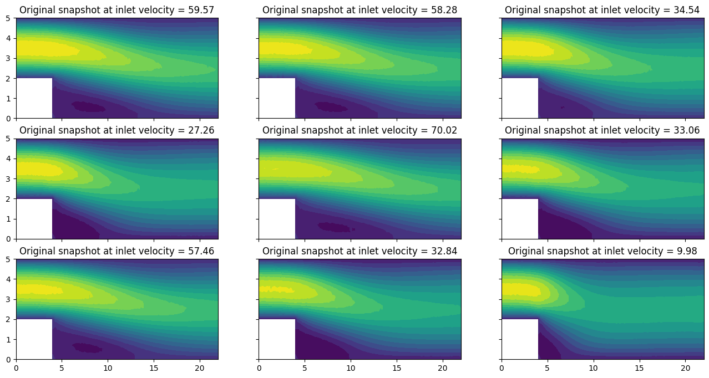
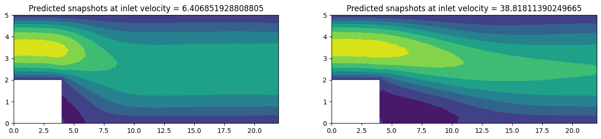

<!DOCTYPE html>
<html class="writer-html5" lang="en" data-content_root="../../">
<head>
  <meta charset="utf-8" /><meta name="viewport" content="width=device-width, initial-scale=1" />

  <meta name="viewport" content="width=device-width, initial-scale=1.0" />
  <title>Test several frameworks at once &mdash; ezyrb 1.3.3 documentation</title>
      <link rel="stylesheet" type="text/css" href="../../_static/pygments.css?v=fa44fd50" />
      <link rel="stylesheet" type="text/css" href="../../_static/css/theme.css?v=e59714d7" />
      <link rel="stylesheet" type="text/css" href="../../_static/graphviz.css?v=4ae1632d" />

  
      <script src="../../_static/jquery.js?v=5d32c60e"></script>
      <script src="../../_static/_sphinx_javascript_frameworks_compat.js?v=2cd50e6c"></script>
      <script src="../../_static/documentation_options.js?v=28d163b9"></script>
      <script src="../../_static/doctools.js?v=9bcbadda"></script>
      <script src="../../_static/sphinx_highlight.js?v=dc90522c"></script>
      <script async="async" src="https://cdn.jsdelivr.net/npm/mathjax@3/es5/tex-mml-chtml.js"></script>
    <script src="../../_static/js/theme.js"></script>
    <link rel="index" title="Index" href="../../genindex.html" />
    <link rel="search" title="Search" href="../../search.html" />
    <link rel="next" title="Using Plugin for implementing NNsPOD-ROM" href="../tutorial-3/tutorial-3.html" />
    <link rel="prev" title="Build and query a simple reduced order model" href="../tutorial-1/tutorial-1.html" /> 
</head>

<body class="wy-body-for-nav"> 
  <div class="wy-grid-for-nav">
    <nav data-toggle="wy-nav-shift" class="wy-nav-side">
      <div class="wy-side-scroll">
        <div class="wy-side-nav-search" >

          
          
          <a href="../../index.html" class="icon icon-home">
            ezyrb
          </a>
<div role="search">
  <form id="rtd-search-form" class="wy-form" action="../../search.html" method="get">
    <input type="text" name="q" placeholder="Search docs" aria-label="Search docs" />
    <input type="hidden" name="check_keywords" value="yes" />
    <input type="hidden" name="area" value="default" />
  </form>
</div>
        </div><div class="wy-menu wy-menu-vertical" data-spy="affix" role="navigation" aria-label="Navigation menu">
              <p class="caption" role="heading"><span class="caption-text">User Guide</span></p>
<ul class="current">
<li class="toctree-l1"><a class="reference internal" href="../../installation.html">Installation</a></li>
<li class="toctree-l1"><a class="reference internal" href="../../quickstart.html">Quick Start</a></li>
<li class="toctree-l1"><a class="reference internal" href="../../code.html">API Documentation</a></li>
<li class="toctree-l1 current"><a class="reference internal" href="../../tutorials.html">Tutorials</a><ul class="current">
<li class="toctree-l2"><a class="reference internal" href="../tutorial-1/tutorial-1.html">Build and query a simple reduced order model</a></li>
<li class="toctree-l2 current"><a class="current reference internal" href="#">Test several frameworks at once</a><ul>
<li class="toctree-l3"><a class="reference internal" href="#initial-setting">Initial setting</a></li>
<li class="toctree-l3"><a class="reference internal" href="#comparison-between-different-methods">Comparison between different methods</a></li>
</ul>
</li>
<li class="toctree-l2"><a class="reference internal" href="../tutorial-3/tutorial-3.html">Using Plugin for implementing NNsPOD-ROM</a></li>
<li class="toctree-l2"><a class="reference internal" href="../tutorial-4/tutorial-4.html">Build a Multi Reduced Order Model (MultiROM)</a></li>
</ul>
</li>
</ul>
<p class="caption" role="heading"><span class="caption-text">Developer Info</span></p>
<ul>
<li class="toctree-l1"><a class="reference internal" href="../../contributing.html">How to contribute</a></li>
<li class="toctree-l1"><a class="reference internal" href="../../contact.html">Contact</a></li>
<li class="toctree-l1"><a class="reference internal" href="../../LICENSE.html">License</a></li>
</ul>

        </div>
      </div>
    </nav>

    <section data-toggle="wy-nav-shift" class="wy-nav-content-wrap"><nav class="wy-nav-top" aria-label="Mobile navigation menu" >
          <i data-toggle="wy-nav-top" class="fa fa-bars"></i>
          <a href="../../index.html">ezyrb</a>
      </nav>

      <div class="wy-nav-content">
        <div class="rst-content">
          <div role="navigation" aria-label="Page navigation">
  <ul class="wy-breadcrumbs">
      <li><a href="../../index.html" class="icon icon-home" aria-label="Home"></a></li>
          <li class="breadcrumb-item"><a href="../../tutorials.html">Tutorials</a></li>
      <li class="breadcrumb-item active">Test several frameworks at once</li>
      <li class="wy-breadcrumbs-aside">
            <a href="../../_sources/_tutorials/tutorial-2/tutorial-2.rst.txt" rel="nofollow"> View page source</a>
      </li>
  </ul>
  <hr/>
</div>
          <div role="main" class="document" itemscope="itemscope" itemtype="http://schema.org/Article">
           <div itemprop="articleBody">
             
  <section id="test-several-frameworks-at-once">
<h1>Test several frameworks at once<a class="headerlink" href="#test-several-frameworks-at-once" title="Link to this heading"></a></h1>
<p>In this tutorial, we will explain step by step how to use the <strong>EZyRB</strong>
library to test different techniques for building the reduced order
model. We will compare different methods of dimensionality reduction,
interpolation and accuracy assessment.</p>
<p>We consider here a computational fluid dynamics problem described by the
(incompressible) Navier Stokes equations. We will be using the <strong>Navier
Stokes Dataset</strong> that contains the output data from a full order flow
simulation and can be found on <strong>Hugging Face Datasets</strong></p>
<p>The package can be installed using <code class="docutils literal notranslate"><span class="pre">python</span> <span class="pre">-m</span> <span class="pre">pip</span> <span class="pre">install</span> <span class="pre">datasets</span></code>,
but for a detailed description about installation and usage we refer to
original <a class="reference external" href="https://huggingface.co/docs/datasets/index">Github page</a>.</p>
<p>First of all, we just import the package and instantiate the dataset
object.</p>
<div class="highlight-ipython3 notranslate"><div class="highlight"><pre><span></span>!pip install datasets ezyrb
</pre></div>
</div>
<div class="highlight-default notranslate"><div class="highlight"><pre><span></span>Requirement already satisfied: datasets in /Users/ndemo/miniconda3/envs/pina/lib/python3.12/site-packages (4.4.2)
Requirement already satisfied: ezyrb in /Users/ndemo/miniconda3/envs/pina/lib/python3.12/site-packages (1.3.2)
Requirement already satisfied: filelock in /Users/ndemo/miniconda3/envs/pina/lib/python3.12/site-packages (from datasets) (3.16.1)
Requirement already satisfied: numpy&gt;=1.17 in /Users/ndemo/miniconda3/envs/pina/lib/python3.12/site-packages (from datasets) (2.2.0)
Requirement already satisfied: pyarrow&gt;=21.0.0 in /Users/ndemo/miniconda3/envs/pina/lib/python3.12/site-packages (from datasets) (22.0.0)
Requirement already satisfied: dill&lt;0.4.1,&gt;=0.3.0 in /Users/ndemo/miniconda3/envs/pina/lib/python3.12/site-packages (from datasets) (0.4.0)
Requirement already satisfied: pandas in /Users/ndemo/miniconda3/envs/pina/lib/python3.12/site-packages (from datasets) (2.2.3)
Requirement already satisfied: requests&gt;=2.32.2 in /Users/ndemo/miniconda3/envs/pina/lib/python3.12/site-packages (from datasets) (2.32.3)
Requirement already satisfied: httpx&lt;1.0.0 in /Users/ndemo/miniconda3/envs/pina/lib/python3.12/site-packages (from datasets) (0.28.1)
Requirement already satisfied: tqdm&gt;=4.66.3 in /Users/ndemo/miniconda3/envs/pina/lib/python3.12/site-packages (from datasets) (4.67.1)
Requirement already satisfied: xxhash in /Users/ndemo/miniconda3/envs/pina/lib/python3.12/site-packages (from datasets) (3.6.0)
Requirement already satisfied: multiprocess&lt;0.70.19 in /Users/ndemo/miniconda3/envs/pina/lib/python3.12/site-packages (from datasets) (0.70.18)
Requirement already satisfied: fsspec&lt;=2025.10.0,&gt;=2023.1.0 in /Users/ndemo/miniconda3/envs/pina/lib/python3.12/site-packages (from fsspec[http]&lt;=2025.10.0,&gt;=2023.1.0-&gt;datasets) (2025.10.0)
Requirement already satisfied: huggingface-hub&lt;2.0,&gt;=0.25.0 in /Users/ndemo/miniconda3/envs/pina/lib/python3.12/site-packages (from datasets) (1.2.3)
Requirement already satisfied: packaging in /Users/ndemo/miniconda3/envs/pina/lib/python3.12/site-packages (from datasets) (24.2)
Requirement already satisfied: pyyaml&gt;=5.1 in /Users/ndemo/miniconda3/envs/pina/lib/python3.12/site-packages (from datasets) (6.0.2)
Requirement already satisfied: future in /Users/ndemo/miniconda3/envs/pina/lib/python3.12/site-packages (from ezyrb) (1.0.0)
Requirement already satisfied: scipy in /Users/ndemo/miniconda3/envs/pina/lib/python3.12/site-packages (from ezyrb) (1.14.1)
Requirement already satisfied: matplotlib in /Users/ndemo/miniconda3/envs/pina/lib/python3.12/site-packages (from ezyrb) (3.10.0)
Requirement already satisfied: scikit-learn in /Users/ndemo/miniconda3/envs/pina/lib/python3.12/site-packages (from ezyrb) (1.8.0)
Requirement already satisfied: torch in /Users/ndemo/miniconda3/envs/pina/lib/python3.12/site-packages (from ezyrb) (2.5.1)
Requirement already satisfied: aiohttp!=4.0.0a0,!=4.0.0a1 in /Users/ndemo/miniconda3/envs/pina/lib/python3.12/site-packages (from fsspec[http]&lt;=2025.10.0,&gt;=2023.1.0-&gt;datasets) (3.11.10)
Requirement already satisfied: anyio in /Users/ndemo/miniconda3/envs/pina/lib/python3.12/site-packages (from httpx&lt;1.0.0-&gt;datasets) (4.8.0)
Requirement already satisfied: certifi in /Users/ndemo/miniconda3/envs/pina/lib/python3.12/site-packages (from httpx&lt;1.0.0-&gt;datasets) (2024.12.14)
Requirement already satisfied: httpcore==1.* in /Users/ndemo/miniconda3/envs/pina/lib/python3.12/site-packages (from httpx&lt;1.0.0-&gt;datasets) (1.0.7)
Requirement already satisfied: idna in /Users/ndemo/miniconda3/envs/pina/lib/python3.12/site-packages (from httpx&lt;1.0.0-&gt;datasets) (3.10)
Requirement already satisfied: h11&lt;0.15,&gt;=0.13 in /Users/ndemo/miniconda3/envs/pina/lib/python3.12/site-packages (from httpcore==1.*-&gt;httpx&lt;1.0.0-&gt;datasets) (0.14.0)
Requirement already satisfied: hf-xet&lt;2.0.0,&gt;=1.2.0 in /Users/ndemo/miniconda3/envs/pina/lib/python3.12/site-packages (from huggingface-hub&lt;2.0,&gt;=0.25.0-&gt;datasets) (1.2.0)
Requirement already satisfied: shellingham in /Users/ndemo/miniconda3/envs/pina/lib/python3.12/site-packages (from huggingface-hub&lt;2.0,&gt;=0.25.0-&gt;datasets) (1.5.4)
Requirement already satisfied: typer-slim in /Users/ndemo/miniconda3/envs/pina/lib/python3.12/site-packages (from huggingface-hub&lt;2.0,&gt;=0.25.0-&gt;datasets) (0.20.1)
Requirement already satisfied: typing-extensions&gt;=3.7.4.3 in /Users/ndemo/miniconda3/envs/pina/lib/python3.12/site-packages (from huggingface-hub&lt;2.0,&gt;=0.25.0-&gt;datasets) (4.12.2)
Requirement already satisfied: charset-normalizer&lt;4,&gt;=2 in /Users/ndemo/miniconda3/envs/pina/lib/python3.12/site-packages (from requests&gt;=2.32.2-&gt;datasets) (3.4.0)
Requirement already satisfied: urllib3&lt;3,&gt;=1.21.1 in /Users/ndemo/miniconda3/envs/pina/lib/python3.12/site-packages (from requests&gt;=2.32.2-&gt;datasets) (2.2.3)
Requirement already satisfied: contourpy&gt;=1.0.1 in /Users/ndemo/miniconda3/envs/pina/lib/python3.12/site-packages (from matplotlib-&gt;ezyrb) (1.3.1)
Requirement already satisfied: cycler&gt;=0.10 in /Users/ndemo/miniconda3/envs/pina/lib/python3.12/site-packages (from matplotlib-&gt;ezyrb) (0.12.1)
Requirement already satisfied: fonttools&gt;=4.22.0 in /Users/ndemo/miniconda3/envs/pina/lib/python3.12/site-packages (from matplotlib-&gt;ezyrb) (4.55.3)
Requirement already satisfied: kiwisolver&gt;=1.3.1 in /Users/ndemo/miniconda3/envs/pina/lib/python3.12/site-packages (from matplotlib-&gt;ezyrb) (1.4.7)
Requirement already satisfied: pillow&gt;=8 in /Users/ndemo/miniconda3/envs/pina/lib/python3.12/site-packages (from matplotlib-&gt;ezyrb) (11.0.0)
Requirement already satisfied: pyparsing&gt;=2.3.1 in /Users/ndemo/miniconda3/envs/pina/lib/python3.12/site-packages (from matplotlib-&gt;ezyrb) (3.2.0)
Requirement already satisfied: python-dateutil&gt;=2.7 in /Users/ndemo/miniconda3/envs/pina/lib/python3.12/site-packages (from matplotlib-&gt;ezyrb) (2.9.0.post0)
Requirement already satisfied: pytz&gt;=2020.1 in /Users/ndemo/miniconda3/envs/pina/lib/python3.12/site-packages (from pandas-&gt;datasets) (2025.1)
Requirement already satisfied: tzdata&gt;=2022.7 in /Users/ndemo/miniconda3/envs/pina/lib/python3.12/site-packages (from pandas-&gt;datasets) (2025.1)
Requirement already satisfied: joblib&gt;=1.3.0 in /Users/ndemo/miniconda3/envs/pina/lib/python3.12/site-packages (from scikit-learn-&gt;ezyrb) (1.5.3)
Requirement already satisfied: threadpoolctl&gt;=3.2.0 in /Users/ndemo/miniconda3/envs/pina/lib/python3.12/site-packages (from scikit-learn-&gt;ezyrb) (3.6.0)
Requirement already satisfied: networkx in /Users/ndemo/miniconda3/envs/pina/lib/python3.12/site-packages (from torch-&gt;ezyrb) (3.4.2)
Requirement already satisfied: jinja2 in /Users/ndemo/miniconda3/envs/pina/lib/python3.12/site-packages (from torch-&gt;ezyrb) (3.1.4)
Requirement already satisfied: setuptools in /Users/ndemo/miniconda3/envs/pina/lib/python3.12/site-packages (from torch-&gt;ezyrb) (75.6.0)
Requirement already satisfied: sympy==1.13.1 in /Users/ndemo/miniconda3/envs/pina/lib/python3.12/site-packages (from torch-&gt;ezyrb) (1.13.1)
Requirement already satisfied: mpmath&lt;1.4,&gt;=1.1.0 in /Users/ndemo/miniconda3/envs/pina/lib/python3.12/site-packages (from sympy==1.13.1-&gt;torch-&gt;ezyrb) (1.3.0)
Requirement already satisfied: aiohappyeyeballs&gt;=2.3.0 in /Users/ndemo/miniconda3/envs/pina/lib/python3.12/site-packages (from aiohttp!=4.0.0a0,!=4.0.0a1-&gt;fsspec[http]&lt;=2025.10.0,&gt;=2023.1.0-&gt;datasets) (2.4.4)
Requirement already satisfied: aiosignal&gt;=1.1.2 in /Users/ndemo/miniconda3/envs/pina/lib/python3.12/site-packages (from aiohttp!=4.0.0a0,!=4.0.0a1-&gt;fsspec[http]&lt;=2025.10.0,&gt;=2023.1.0-&gt;datasets) (1.3.2)
Requirement already satisfied: attrs&gt;=17.3.0 in /Users/ndemo/miniconda3/envs/pina/lib/python3.12/site-packages (from aiohttp!=4.0.0a0,!=4.0.0a1-&gt;fsspec[http]&lt;=2025.10.0,&gt;=2023.1.0-&gt;datasets) (24.3.0)
Requirement already satisfied: frozenlist&gt;=1.1.1 in /Users/ndemo/miniconda3/envs/pina/lib/python3.12/site-packages (from aiohttp!=4.0.0a0,!=4.0.0a1-&gt;fsspec[http]&lt;=2025.10.0,&gt;=2023.1.0-&gt;datasets) (1.5.0)
Requirement already satisfied: multidict&lt;7.0,&gt;=4.5 in /Users/ndemo/miniconda3/envs/pina/lib/python3.12/site-packages (from aiohttp!=4.0.0a0,!=4.0.0a1-&gt;fsspec[http]&lt;=2025.10.0,&gt;=2023.1.0-&gt;datasets) (6.1.0)
Requirement already satisfied: propcache&gt;=0.2.0 in /Users/ndemo/miniconda3/envs/pina/lib/python3.12/site-packages (from aiohttp!=4.0.0a0,!=4.0.0a1-&gt;fsspec[http]&lt;=2025.10.0,&gt;=2023.1.0-&gt;datasets) (0.2.1)
Requirement already satisfied: yarl&lt;2.0,&gt;=1.17.0 in /Users/ndemo/miniconda3/envs/pina/lib/python3.12/site-packages (from aiohttp!=4.0.0a0,!=4.0.0a1-&gt;fsspec[http]&lt;=2025.10.0,&gt;=2023.1.0-&gt;datasets) (1.18.3)
Requirement already satisfied: six&gt;=1.5 in /Users/ndemo/miniconda3/envs/pina/lib/python3.12/site-packages (from python-dateutil&gt;=2.7-&gt;matplotlib-&gt;ezyrb) (1.17.0)
Requirement already satisfied: sniffio&gt;=1.1 in /Users/ndemo/miniconda3/envs/pina/lib/python3.12/site-packages (from anyio-&gt;httpx&lt;1.0.0-&gt;datasets) (1.3.1)
Requirement already satisfied: MarkupSafe&gt;=2.0 in /Users/ndemo/miniconda3/envs/pina/lib/python3.12/site-packages (from jinja2-&gt;torch-&gt;ezyrb) (3.0.2)
Requirement already satisfied: click&gt;=8.0.0 in /Users/ndemo/miniconda3/envs/pina/lib/python3.12/site-packages (from typer-slim-&gt;huggingface-hub&lt;2.0,&gt;=0.25.0-&gt;datasets) (8.3.1)

[notice] A new release of pip is available: 24.3.1 -&gt; 25.3
[notice] To update, run: pip install --upgrade pip
</pre></div>
</div>
<div class="highlight-ipython3 notranslate"><div class="highlight"><pre><span></span>from datasets import load_dataset
data_path = &quot;kshitij-pandey/navier_stokes_datasets&quot;
snapshots_hf = load_dataset(data_path, &quot;snapshots_split&quot;, split=&quot;train&quot;)
param_hf = load_dataset(data_path, &quot;params&quot;, split=&quot;train&quot;)
triangles_hf    = load_dataset(data_path, &quot;triangles&quot;, split=&quot;train&quot;)
coords_hf = load_dataset(data_path, &quot;coords&quot;, split=&quot;train&quot;)
import numpy as np
snapshots = {name: np.array(snapshots_hf[name]) for name in [&#39;vx&#39;, &#39;vy&#39;, &#39;mag(v)&#39;, &#39;p&#39;]}
# convert the dict files into numpy

import pandas as pd

def hf_to_numpy(ds):
    return ds.to_pandas().to_numpy()


params = hf_to_numpy(param_hf)
triangles = hf_to_numpy(triangles_hf)
coords = hf_to_numpy(coords_hf)
</pre></div>
</div>
<p>The <code class="docutils literal notranslate"><span class="pre">NavierStokesDataset()</span></code> class contains the attribute: -
<code class="docutils literal notranslate"><span class="pre">snapshots</span></code>: the matrices of snapshots stored by row (one matrix for
any output field) - <code class="docutils literal notranslate"><span class="pre">params</span></code>: the matrix of corresponding parameters -
<code class="docutils literal notranslate"><span class="pre">pts_coordinates</span></code>: the coordinates of all nodes of the discretize
space - <code class="docutils literal notranslate"><span class="pre">faces</span></code>: the actual topology of the discretize space -
<code class="docutils literal notranslate"><span class="pre">triang</span></code>: the triangulation, useful especially for rendering purposes.</p>
<p>In the details, <code class="docutils literal notranslate"><span class="pre">snapshots</span></code> is a dictionary with the following output
of interest: - <strong>vx:</strong> velocity in the X-direction. - <strong>vy:</strong> velocity
in the Y-direction. - <strong>mag(v):</strong> velocity magnitude. - <strong>p:</strong> pressure
value.</p>
<p>In total, the dataset contains 500 parametric configurations in a space
of 1639 degrees of freedom. In this case, we have just one parameter,
which is the velocity (along <span class="math notranslate nohighlight">\(x\)</span>) we impose at the inlet.</p>
<div class="highlight-ipython3 notranslate"><div class="highlight"><pre><span></span>for name in [&#39;vx&#39;, &#39;vy&#39;, &#39;p&#39;, &#39;mag(v)&#39;]:
     print(&#39;Shape of {:7s} snapshots matrix: {}&#39;.format(name, snapshots[name].shape))

print(&#39;Shape of parameters matrix: {}&#39;.format(params.shape))
</pre></div>
</div>
<div class="highlight-default notranslate"><div class="highlight"><pre><span></span><span class="n">Shape</span> <span class="n">of</span> <span class="n">vx</span>      <span class="n">snapshots</span> <span class="n">matrix</span><span class="p">:</span> <span class="p">(</span><span class="mi">500</span><span class="p">,</span> <span class="mi">1639</span><span class="p">)</span>
<span class="n">Shape</span> <span class="n">of</span> <span class="n">vy</span>      <span class="n">snapshots</span> <span class="n">matrix</span><span class="p">:</span> <span class="p">(</span><span class="mi">500</span><span class="p">,</span> <span class="mi">1639</span><span class="p">)</span>
<span class="n">Shape</span> <span class="n">of</span> <span class="n">p</span>       <span class="n">snapshots</span> <span class="n">matrix</span><span class="p">:</span> <span class="p">(</span><span class="mi">500</span><span class="p">,</span> <span class="mi">1639</span><span class="p">)</span>
<span class="n">Shape</span> <span class="n">of</span> <span class="n">mag</span><span class="p">(</span><span class="n">v</span><span class="p">)</span>  <span class="n">snapshots</span> <span class="n">matrix</span><span class="p">:</span> <span class="p">(</span><span class="mi">500</span><span class="p">,</span> <span class="mi">1639</span><span class="p">)</span>
<span class="n">Shape</span> <span class="n">of</span> <span class="n">parameters</span> <span class="n">matrix</span><span class="p">:</span> <span class="p">(</span><span class="mi">500</span><span class="p">,</span> <span class="mi">1</span><span class="p">)</span>
</pre></div>
</div>
<section id="initial-setting">
<h2>Initial setting<a class="headerlink" href="#initial-setting" title="Link to this heading"></a></h2>
<p>First of all, we import the required packages.</p>
<p>From <code class="docutils literal notranslate"><span class="pre">EZyRB</span></code> we need: 1. The <code class="docutils literal notranslate"><span class="pre">ROM</span></code> class, which performs the model
order reduction process. 2. A module such as <code class="docutils literal notranslate"><span class="pre">Database</span></code>, where the
matrices of snapshots and parameters are stored. 3. A dimensionality
reduction method such as Proper Orthogonal Decomposition <code class="docutils literal notranslate"><span class="pre">POD</span></code> or
Auto-Encoder network <code class="docutils literal notranslate"><span class="pre">AE</span></code>. 4. An interpolation method to obtain an
approximation for the parametric solution for a new set of parameters
such as the Radial Basis Function <code class="docutils literal notranslate"><span class="pre">RBF</span></code>, Gaussian Process Regression
<code class="docutils literal notranslate"><span class="pre">GPR</span></code>, K-Neighbors Regressor <code class="docutils literal notranslate"><span class="pre">KNeighborsRegressor</span></code>, Radius Neighbors
Regressor <code class="docutils literal notranslate"><span class="pre">RadiusNeighborsRegressor</span></code> or Multidimensional Linear
Interpolator <code class="docutils literal notranslate"><span class="pre">Linear</span></code>.</p>
<p>We also need to import: * <code class="docutils literal notranslate"><span class="pre">numpy:</span></code> to handle arrays and matrices we
will be working with. * <code class="docutils literal notranslate"><span class="pre">torch:</span></code> to enable the usage of Neural
Networks * <code class="docutils literal notranslate"><span class="pre">matplotlib.pyplot:</span></code> to handle the plotting environment.
* <code class="docutils literal notranslate"><span class="pre">matplotlib.tri:</span></code> for plotting of the triangular grid.</p>
<div class="highlight-ipython3 notranslate"><div class="highlight"><pre><span></span># Database module
from ezyrb import Database

# Dimensionality reduction methods
from ezyrb import POD, AE

# Approximation/interpolation methods
from ezyrb import RBF, GPR, KNeighborsRegressor, RadiusNeighborsRegressor, Linear, ANN

# Model order reduction calss
from ezyrb import ReducedOrderModel as ROM
import torch
import torch.nn as nn

import matplotlib.tri as mtri
import matplotlib.pyplot as plt

import warnings
warnings.filterwarnings(&quot;ignore&quot;, message=&quot;Ill-conditioned matrix &quot;)
%matplotlib inline
</pre></div>
</div>
<p>Before starting with the reduced order model, we visualize some of the
snapshots in our dataset.</p>
<div class="highlight-ipython3 notranslate"><div class="highlight"><pre><span></span>x, y  = coords
from matplotlib.tri import Triangulation
triang = Triangulation(x, y, triangles)
fig, ax = plt.subplots(nrows=3, ncols=3, figsize=(16, 8), sharey=True, sharex=True)
ax = ax.flatten()
for i in range(9):
    ax[i].tricontourf(triang, snapshots[&#39;vx&#39;][i], levels=16)
    ax[i].set_title(&#39;Original snapshot at inlet velocity = {}&#39;.format(*params[i].round(2)))
</pre></div>
</div>

<p>In this step, we perform the model order reduction to obtain a reduced
space from the full order space. We refer to <a class="reference external" href="https://github.com/mathLab/EZyRB/blob/master/tutorials/tutorial-1.ipynb">Tutorial
1</a>
for the description of the basic workflow, here we just quickly describe
the steps implemented in the next cell.</p>
<p>We start by passing the matrices of the parameters and snapshots to the
<code class="docutils literal notranslate"><span class="pre">Database()</span></code> class. It must be said that at this time we create the
ROM for the <code class="docutils literal notranslate"><span class="pre">vx</span></code> field. We also instantiate the <code class="docutils literal notranslate"><span class="pre">POD</span></code> and <code class="docutils literal notranslate"><span class="pre">RBF</span></code>
object to have a benchmark ROM.</p>
<div class="highlight-ipython3 notranslate"><div class="highlight"><pre><span></span>db = Database(params, snapshots[&#39;vx&#39;])
rom = ROM(db, POD(), RBF())
rom.fit();
</pre></div>
</div>
<p>Three lines for a data-driven reduced order model, not bad!</p>
<p>Just to have a visual check that everything is going well, we plot the
approximation for new parameters in the range <span class="math notranslate nohighlight">\([1, 80]\)</span>.</p>
<div class="highlight-ipython3 notranslate"><div class="highlight"><pre><span></span>new_params = np.random.uniform(size=(2))*79.+1.

fig, ax = plt.subplots(nrows=1, ncols=2, figsize=(16, 3))
for i, param in enumerate(new_params):
    ax[i].tricontourf(triang, *rom.predict([param]))
    ax[i].set_title(&#39;Predicted snapshots at inlet velocity = {}&#39;.format(param))
</pre></div>
</div>

<p>We are now calculating the approximation error to see how close is our
reduced solution to the full-order solution/simulation using the
<strong>k-fold Cross-Validation</strong> strategy by passing the number of splits to
the <code class="docutils literal notranslate"><span class="pre">ReducedOrderModel.kfold_cv_error(n_splits)</span></code> method, which
operates as follows:</p>
<ol class="arabic simple">
<li><p>Split the dataset (parameters/snapshots) into <span class="math notranslate nohighlight">\(k\)</span>-number of
groups/folds.</p></li>
<li><p>Use <span class="math notranslate nohighlight">\(k-1\)</span> groups to calculate the reduced space and leave one
group for testing.</p></li>
<li><p>Use the approximation/interpolation method to predict each snapshot
in the testing group.</p></li>
<li><p>Calculate the error for each snapshot in the testing group by taking
the difference between the predicted and the original snapshot.</p></li>
<li><p>Average the errors for predicting snapshots of the testing
group/fold.</p></li>
<li><p>Repeat this procedure using different groups for testing and the
remaining <span class="math notranslate nohighlight">\(k-1\)</span> groups to calculate the reduced space.</p></li>
<li><p>In the end, we will have <span class="math notranslate nohighlight">\(k\)</span>-number errors for predicting each
group/fold that we can average them to have one value for the error.</p></li>
</ol>
<div class="highlight-ipython3 notranslate"><div class="highlight"><pre><span></span>errors = rom.kfold_cv_error(n_splits = 5)
print(&#39;Average error for each fold:&#39;)
for e in errors:
    print(&#39;  &#39;,e)
print(&#39;\nAverage error = {}&#39;.format(errors.mean()))
</pre></div>
</div>
<div class="highlight-default notranslate"><div class="highlight"><pre><span></span><span class="n">Average</span> <span class="n">error</span> <span class="k">for</span> <span class="n">each</span> <span class="n">fold</span><span class="p">:</span>
   <span class="mf">4.945136635258633e-07</span>
   <span class="mf">9.860761253488605e-07</span>
   <span class="mf">3.894778057436833e-06</span>
   <span class="mf">5.303642035538002e-06</span>
   <span class="mf">1.2984622088905908e-07</span>

<span class="n">Average</span> <span class="n">error</span> <span class="o">=</span> <span class="mf">2.1617712205477237e-06</span>
</pre></div>
</div>
<p>Another strategy for calculating the approximation error is called
<strong>leave-one-out</strong> by using the <code class="docutils literal notranslate"><span class="pre">ReducedOrderModel.loo_error()</span></code> method,
which is similar to setting the number of folds equal to the number of
snapshots (eg. in this case setting <code class="docutils literal notranslate"><span class="pre">n_splits</span></code> = 500) and it operates
as follows: 1. Combine all the snapshots except one. 2. Calculate the
reduced space. 3. Use the approximation/interpolation method to predict
the removed snapshot. 4. Calculate the error by taking the difference
between the predicted snapshot and the original removed one. 5. The
error vector is obtained by repeating this procedure for each snapshot
in the database.</p>
<p>It is worth mentioning that it consumes more time because we have 500
snapshots and the algorithm will perform space order reduction and
calculate the approximation error 500 times. For this reason, we
commented the next line of code, in order to limit the computational
effort needed to run this tutorial. Uncomment it only if you are a
really brave person!</p>
<div class="highlight-ipython3 notranslate"><div class="highlight"><pre><span></span># errors = rom.loo_error()
</pre></div>
</div>
</section>
<section id="comparison-between-different-methods">
<h2>Comparison between different methods<a class="headerlink" href="#comparison-between-different-methods" title="Link to this heading"></a></h2>
<p>One of the advantages of the data-driven reduced order modeling is the
modular nature of the method. Practically speaking, we need - a method
for reducing the dimensionality of input snapshots; - a method for
approximate the solution manifold;</p>
<p>allowing in principle a large variety of combinations.</p>
<p>The list of implemented <strong>reduction methods</strong> in EZyRB contains: -
<code class="docutils literal notranslate"><span class="pre">POD</span></code>: <em>proper orthogonal decomposition</em> - <code class="docutils literal notranslate"><span class="pre">AE</span></code>: <em>autoencoder</em></p>
<p>while the list of implemented <strong>approximation methods</strong> contains: -
<code class="docutils literal notranslate"><span class="pre">RBF</span></code>: <em>radial basis function interpolation</em> - <code class="docutils literal notranslate"><span class="pre">GPR</span></code>: <em>gaussian
process regression</em> - <code class="docutils literal notranslate"><span class="pre">KNeighborsRegressor</span></code>: <em>k-neighbors regression</em>
- <code class="docutils literal notranslate"><span class="pre">RadiusNeighborsRegressor</span></code>: <em>radius neighbors regression</em> -
<code class="docutils literal notranslate"><span class="pre">Linear</span></code>: <em>multidimensional linear interpolation</em></p>
<p>Moreover, new state-of-the-art methods will arrive, so we invite you to
read the <a class="reference external" href="https://mathlab.github.io/EZyRB/">documentation</a> for the
complete list of all the possibilities!</p>
<p>In the next cell, we create two dictionaries with the objects, such that
we can easily test everything with simple <code class="docutils literal notranslate"><span class="pre">for</span></code> cycles. <strong>WARNING</strong>
since several methods require the solution of an optimization problem
(eg. GPR, ANN, AE), the cell may require some minutes to be run.</p>
<div class="highlight-ipython3 notranslate"><div class="highlight"><pre><span></span>reductions = {
    &#39;POD&#39;: POD(&#39;svd&#39;,rank=10),
    &#39;AE&#39;: AE([200, 100, 10], [10, 100, 200], nn.Tanh(), nn.Tanh(), 10, frequency_print=-10),
}

approximations = {
#    &#39;Linear&#39;: Linear(),
    &#39;RBF&#39;: RBF(),
    &#39;GPR&#39;: GPR(),
    &#39;KNeighbors&#39;: KNeighborsRegressor(),
    &#39;RadiusNeighbors&#39;:  RadiusNeighborsRegressor(),
    &#39;ANN&#39;: ANN([20, 20], nn.Tanh(), 10, frequency_print=-10),
}

s = &#39;\n\n{:10s}&#39;.format(&#39;&#39;)
for name in approximations:
    s += &#39; {:&gt;15s}&#39;.format(name)
s += &#39;\n&#39;

for redname, redclass in reductions.items():
    row = &#39;{:10s}&#39;.format(redname)
    for approxname, approxclass in approximations.items():
        rom = ROM(db, redclass, approxclass)
        print(f&quot;Processing {redname}-{approxname}&quot;)
        rom.fit()
        row += &#39; {:15e}&#39;.format(rom.kfold_cv_error(n_splits=5).mean())

    s += f&#39;{row}\n&#39;

print(s)
</pre></div>
</div>
<div class="highlight-default notranslate"><div class="highlight"><pre><span></span><span class="n">Processing</span> <span class="n">POD</span><span class="o">-</span><span class="n">RBF</span>
<span class="n">Processing</span> <span class="n">POD</span><span class="o">-</span><span class="n">GPR</span>
<span class="n">Processing</span> <span class="n">POD</span><span class="o">-</span><span class="n">KNeighbors</span>
<span class="n">Processing</span> <span class="n">POD</span><span class="o">-</span><span class="n">RadiusNeighbors</span>
<span class="n">Processing</span> <span class="n">POD</span><span class="o">-</span><span class="n">ANN</span>
<span class="p">[</span><span class="n">epoch</span>      <span class="mi">1</span><span class="p">]</span>      <span class="mf">9.546327e+04</span>
<span class="p">[</span><span class="n">epoch</span>     <span class="mi">10</span><span class="p">]</span>      <span class="mf">9.538811e+04</span>
<span class="p">[</span><span class="n">epoch</span>      <span class="mi">1</span><span class="p">]</span>      <span class="mf">9.522560e+04</span>
<span class="p">[</span><span class="n">epoch</span>     <span class="mi">10</span><span class="p">]</span>      <span class="mf">9.515077e+04</span>
<span class="p">[</span><span class="n">epoch</span>      <span class="mi">1</span><span class="p">]</span>      <span class="mf">9.766096e+04</span>
<span class="p">[</span><span class="n">epoch</span>     <span class="mi">10</span><span class="p">]</span>      <span class="mf">9.758415e+04</span>
<span class="p">[</span><span class="n">epoch</span>      <span class="mi">1</span><span class="p">]</span>      <span class="mf">9.519630e+04</span>
<span class="p">[</span><span class="n">epoch</span>     <span class="mi">10</span><span class="p">]</span>      <span class="mf">9.512106e+04</span>
<span class="p">[</span><span class="n">epoch</span>      <span class="mi">1</span><span class="p">]</span>      <span class="mf">9.567339e+04</span>
<span class="p">[</span><span class="n">epoch</span>     <span class="mi">10</span><span class="p">]</span>      <span class="mf">9.559758e+04</span>
<span class="p">[</span><span class="n">epoch</span>      <span class="mi">1</span><span class="p">]</span>      <span class="mf">9.314678e+04</span>
<span class="p">[</span><span class="n">epoch</span>     <span class="mi">10</span><span class="p">]</span>      <span class="mf">9.307255e+04</span>
<span class="n">Processing</span> <span class="n">AE</span><span class="o">-</span><span class="n">RBF</span>
<span class="p">[</span><span class="n">epoch</span>      <span class="mi">1</span><span class="p">]</span>      <span class="mf">5.823453e+02</span>
<span class="p">[</span><span class="n">epoch</span>     <span class="mi">10</span><span class="p">]</span>      <span class="mf">5.556604e+02</span>
<span class="p">[</span><span class="n">epoch</span>      <span class="mi">1</span><span class="p">]</span>      <span class="mf">5.812169e+02</span>
<span class="p">[</span><span class="n">epoch</span>     <span class="mi">10</span><span class="p">]</span>      <span class="mf">8.230733e+01</span>
<span class="p">[</span><span class="n">epoch</span>      <span class="mi">1</span><span class="p">]</span>      <span class="mf">5.957941e+02</span>
<span class="p">[</span><span class="n">epoch</span>     <span class="mi">10</span><span class="p">]</span>      <span class="mf">9.019125e+01</span>
<span class="p">[</span><span class="n">epoch</span>      <span class="mi">1</span><span class="p">]</span>      <span class="mf">5.806075e+02</span>
<span class="p">[</span><span class="n">epoch</span>     <span class="mi">10</span><span class="p">]</span>      <span class="mf">6.687416e+01</span>
<span class="p">[</span><span class="n">epoch</span>      <span class="mi">1</span><span class="p">]</span>      <span class="mf">5.835210e+02</span>
<span class="p">[</span><span class="n">epoch</span>     <span class="mi">10</span><span class="p">]</span>      <span class="mf">7.294649e+01</span>
<span class="p">[</span><span class="n">epoch</span>      <span class="mi">1</span><span class="p">]</span>      <span class="mf">5.700542e+02</span>
<span class="p">[</span><span class="n">epoch</span>     <span class="mi">10</span><span class="p">]</span>      <span class="mf">7.343178e+01</span>
<span class="n">Processing</span> <span class="n">AE</span><span class="o">-</span><span class="n">GPR</span>
<span class="p">[</span><span class="n">epoch</span>      <span class="mi">1</span><span class="p">]</span>      <span class="mf">5.834352e+02</span>
<span class="p">[</span><span class="n">epoch</span>     <span class="mi">10</span><span class="p">]</span>      <span class="mf">7.699603e+01</span>
<span class="p">[</span><span class="n">epoch</span>      <span class="mi">1</span><span class="p">]</span>      <span class="mf">5.847290e+02</span>
<span class="p">[</span><span class="n">epoch</span>     <span class="mi">10</span><span class="p">]</span>      <span class="mf">1.470968e+02</span>
<span class="p">[</span><span class="n">epoch</span>      <span class="mi">1</span><span class="p">]</span>      <span class="mf">5.948226e+02</span>
<span class="p">[</span><span class="n">epoch</span>     <span class="mi">10</span><span class="p">]</span>      <span class="mf">7.184375e+01</span>
<span class="p">[</span><span class="n">epoch</span>      <span class="mi">1</span><span class="p">]</span>      <span class="mf">5.802390e+02</span>
<span class="p">[</span><span class="n">epoch</span>     <span class="mi">10</span><span class="p">]</span>      <span class="mf">7.155777e+01</span>
<span class="p">[</span><span class="n">epoch</span>      <span class="mi">1</span><span class="p">]</span>      <span class="mf">5.853676e+02</span>
<span class="p">[</span><span class="n">epoch</span>     <span class="mi">10</span><span class="p">]</span>      <span class="mf">1.150479e+02</span>
<span class="p">[</span><span class="n">epoch</span>      <span class="mi">1</span><span class="p">]</span>      <span class="mf">5.690804e+02</span>
<span class="p">[</span><span class="n">epoch</span>     <span class="mi">10</span><span class="p">]</span>      <span class="mf">6.931157e+01</span>
<span class="n">Processing</span> <span class="n">AE</span><span class="o">-</span><span class="n">KNeighbors</span>
<span class="p">[</span><span class="n">epoch</span>      <span class="mi">1</span><span class="p">]</span>      <span class="mf">5.819167e+02</span>
<span class="p">[</span><span class="n">epoch</span>     <span class="mi">10</span><span class="p">]</span>      <span class="mf">6.814513e+01</span>
<span class="p">[</span><span class="n">epoch</span>      <span class="mi">1</span><span class="p">]</span>      <span class="mf">5.820450e+02</span>
<span class="p">[</span><span class="n">epoch</span>     <span class="mi">10</span><span class="p">]</span>      <span class="mf">9.533990e+01</span>
<span class="p">[</span><span class="n">epoch</span>      <span class="mi">1</span><span class="p">]</span>      <span class="mf">5.980317e+02</span>
<span class="p">[</span><span class="n">epoch</span>     <span class="mi">10</span><span class="p">]</span>      <span class="mf">1.218049e+02</span>
<span class="p">[</span><span class="n">epoch</span>      <span class="mi">1</span><span class="p">]</span>      <span class="mf">5.849615e+02</span>
<span class="p">[</span><span class="n">epoch</span>     <span class="mi">10</span><span class="p">]</span>      <span class="mf">9.724957e+01</span>
<span class="p">[</span><span class="n">epoch</span>      <span class="mi">1</span><span class="p">]</span>      <span class="mf">5.848712e+02</span>
<span class="p">[</span><span class="n">epoch</span>     <span class="mi">10</span><span class="p">]</span>      <span class="mf">1.151645e+02</span>
<span class="p">[</span><span class="n">epoch</span>      <span class="mi">1</span><span class="p">]</span>      <span class="mf">5.692266e+02</span>
<span class="p">[</span><span class="n">epoch</span>     <span class="mi">10</span><span class="p">]</span>      <span class="mf">7.778555e+01</span>
<span class="n">Processing</span> <span class="n">AE</span><span class="o">-</span><span class="n">RadiusNeighbors</span>
<span class="p">[</span><span class="n">epoch</span>      <span class="mi">1</span><span class="p">]</span>      <span class="mf">5.845089e+02</span>
<span class="p">[</span><span class="n">epoch</span>     <span class="mi">10</span><span class="p">]</span>      <span class="mf">1.057290e+02</span>
<span class="p">[</span><span class="n">epoch</span>      <span class="mi">1</span><span class="p">]</span>      <span class="mf">5.836143e+02</span>
<span class="p">[</span><span class="n">epoch</span>     <span class="mi">10</span><span class="p">]</span>      <span class="mf">8.220594e+01</span>
<span class="p">[</span><span class="n">epoch</span>      <span class="mi">1</span><span class="p">]</span>      <span class="mf">5.969666e+02</span>
<span class="p">[</span><span class="n">epoch</span>     <span class="mi">10</span><span class="p">]</span>      <span class="mf">8.701730e+01</span>
<span class="p">[</span><span class="n">epoch</span>      <span class="mi">1</span><span class="p">]</span>      <span class="mf">5.823361e+02</span>
<span class="p">[</span><span class="n">epoch</span>     <span class="mi">10</span><span class="p">]</span>      <span class="mf">9.751357e+01</span>
<span class="p">[</span><span class="n">epoch</span>      <span class="mi">1</span><span class="p">]</span>      <span class="mf">5.850589e+02</span>
<span class="p">[</span><span class="n">epoch</span>     <span class="mi">10</span><span class="p">]</span>      <span class="mf">9.528002e+01</span>
<span class="p">[</span><span class="n">epoch</span>      <span class="mi">1</span><span class="p">]</span>      <span class="mf">5.675153e+02</span>
<span class="p">[</span><span class="n">epoch</span>     <span class="mi">10</span><span class="p">]</span>      <span class="mf">6.384907e+01</span>
<span class="n">Processing</span> <span class="n">AE</span><span class="o">-</span><span class="n">ANN</span>
<span class="p">[</span><span class="n">epoch</span>      <span class="mi">1</span><span class="p">]</span>      <span class="mf">5.835621e+02</span>
<span class="p">[</span><span class="n">epoch</span>     <span class="mi">10</span><span class="p">]</span>      <span class="mf">1.136382e+02</span>
<span class="p">[</span><span class="n">epoch</span>      <span class="mi">1</span><span class="p">]</span>      <span class="mf">4.710647e+03</span>
<span class="p">[</span><span class="n">epoch</span>     <span class="mi">10</span><span class="p">]</span>      <span class="mf">4.693913e+03</span>
<span class="p">[</span><span class="n">epoch</span>      <span class="mi">1</span><span class="p">]</span>      <span class="mf">5.837049e+02</span>
<span class="p">[</span><span class="n">epoch</span>     <span class="mi">10</span><span class="p">]</span>      <span class="mf">1.006396e+02</span>
<span class="p">[</span><span class="n">epoch</span>      <span class="mi">1</span><span class="p">]</span>      <span class="mf">6.297388e+03</span>
<span class="p">[</span><span class="n">epoch</span>     <span class="mi">10</span><span class="p">]</span>      <span class="mf">6.277451e+03</span>
<span class="p">[</span><span class="n">epoch</span>      <span class="mi">1</span><span class="p">]</span>      <span class="mf">6.003340e+02</span>
<span class="p">[</span><span class="n">epoch</span>     <span class="mi">10</span><span class="p">]</span>      <span class="mf">9.461213e+01</span>
<span class="p">[</span><span class="n">epoch</span>      <span class="mi">1</span><span class="p">]</span>      <span class="mf">3.808644e+03</span>
<span class="p">[</span><span class="n">epoch</span>     <span class="mi">10</span><span class="p">]</span>      <span class="mf">3.790863e+03</span>
<span class="p">[</span><span class="n">epoch</span>      <span class="mi">1</span><span class="p">]</span>      <span class="mf">5.810663e+02</span>
<span class="p">[</span><span class="n">epoch</span>     <span class="mi">10</span><span class="p">]</span>      <span class="mf">8.357424e+01</span>
<span class="p">[</span><span class="n">epoch</span>      <span class="mi">1</span><span class="p">]</span>      <span class="mf">5.692258e+03</span>
<span class="p">[</span><span class="n">epoch</span>     <span class="mi">10</span><span class="p">]</span>      <span class="mf">5.670917e+03</span>
<span class="p">[</span><span class="n">epoch</span>      <span class="mi">1</span><span class="p">]</span>      <span class="mf">5.863652e+02</span>
<span class="p">[</span><span class="n">epoch</span>     <span class="mi">10</span><span class="p">]</span>      <span class="mf">1.553782e+02</span>
<span class="p">[</span><span class="n">epoch</span>      <span class="mi">1</span><span class="p">]</span>      <span class="mf">4.325479e+03</span>
<span class="p">[</span><span class="n">epoch</span>     <span class="mi">10</span><span class="p">]</span>      <span class="mf">4.307963e+03</span>
<span class="p">[</span><span class="n">epoch</span>      <span class="mi">1</span><span class="p">]</span>      <span class="mf">5.707682e+02</span>
<span class="p">[</span><span class="n">epoch</span>     <span class="mi">10</span><span class="p">]</span>      <span class="mf">9.925204e+01</span>
<span class="p">[</span><span class="n">epoch</span>      <span class="mi">1</span><span class="p">]</span>      <span class="mf">5.734101e+03</span>
<span class="p">[</span><span class="n">epoch</span>     <span class="mi">10</span><span class="p">]</span>      <span class="mf">5.716063e+03</span>


                       <span class="n">RBF</span>             <span class="n">GPR</span>      <span class="n">KNeighbors</span> <span class="n">RadiusNeighbors</span>             <span class="n">ANN</span>
<span class="n">POD</span>           <span class="mf">1.204641e-05</span>    <span class="mf">2.970147e-05</span>    <span class="mf">8.032581e-03</span>    <span class="mf">1.091257e-02</span>    <span class="mf">9.975237e-01</span>
<span class="n">AE</span>            <span class="mf">3.301131e-01</span>    <span class="mf">3.514848e-01</span>    <span class="mf">3.619394e-01</span>    <span class="mf">3.477732e-01</span>    <span class="mf">9.939129e-01</span>
</pre></div>
</div>
<p>In a very compact way, we tested several frameworks - like POD-RBF,
POD-GPR, POD-NN -, showing the accuracy reached by any of them.</p>
<p>We can also note that the frameworks that involve neural networks
(<code class="docutils literal notranslate"><span class="pre">AE</span></code> and <code class="docutils literal notranslate"><span class="pre">ANN</span></code>) show a very poor precision. This is due to the fact
of the limited number of epochs we impose in the learning procedure. You
can try to increase the number of epochs as we shown in the next cell in
order to obtain better results, at the cost of a longer training phase.</p>
<div class="highlight-ipython3 notranslate"><div class="highlight"><pre><span></span>reductions[&#39;AE&#39;] = AE([100, 10], [10, 100], nn.ReLU(), nn.ReLU(), 30000)
approximations[&#39;ANN&#39;] = ANN([50, 10], nn.ReLU(), 30000)
</pre></div>
</div>
</section>
</section>


           </div>
          </div>
          <footer><div class="rst-footer-buttons" role="navigation" aria-label="Footer">
        <a href="../tutorial-1/tutorial-1.html" class="btn btn-neutral float-left" title="Build and query a simple reduced order model" accesskey="p" rel="prev"><span class="fa fa-arrow-circle-left" aria-hidden="true"></span> Previous</a>
        <a href="../tutorial-3/tutorial-3.html" class="btn btn-neutral float-right" title="Using Plugin for implementing NNsPOD-ROM" accesskey="n" rel="next">Next <span class="fa fa-arrow-circle-right" aria-hidden="true"></span></a>
    </div>

  <hr/>

  <div role="contentinfo">
    <p>&#169; Copyright 2016-2025, EZyRB contributors.
      <span class="lastupdated">Last updated on Dec 22, 2025.
      </span></p>
  </div>

  Built with <a href="https://www.sphinx-doc.org/">Sphinx</a> using a
    <a href="https://github.com/readthedocs/sphinx_rtd_theme">theme</a>
    provided by <a href="https://readthedocs.org">Read the Docs</a>.
   

</footer>
        </div>
      </div>
    </section>
  </div>
  <script>
      jQuery(function () {
          SphinxRtdTheme.Navigation.enable(true);
      });
  </script> 

</body>
</html>